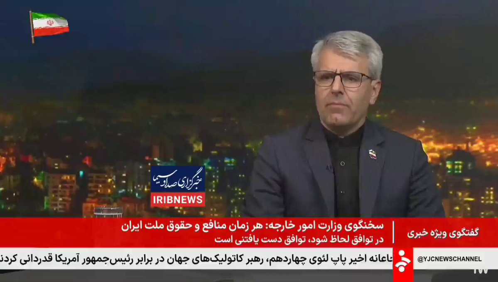

@Tasnimnews_Fa
📝 原文: Foreign Ministry Spokesman: Negotiations in previous rounds were focused on the nuclear issue, but the negotiations over these past few days are aimed at ending the war.
🇨🇳 译文: 外交部发言人：前几轮谈判的重点是核问题，这几天的谈判是为了结束战争。


🕒 2026-04-17T20:00:01.000Z